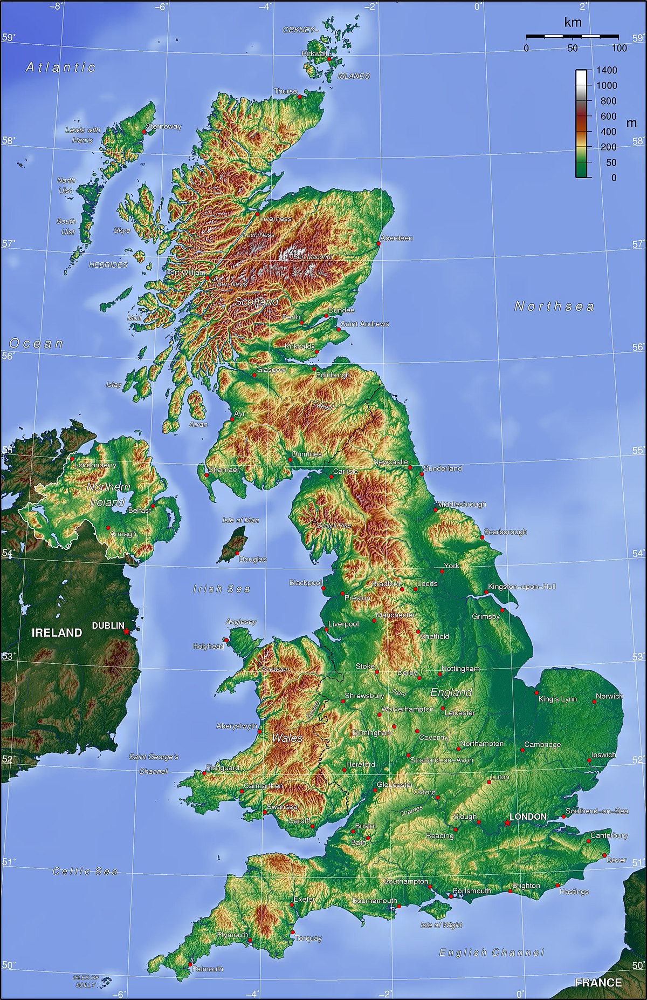

Kondisi Geografi Britania Raya
Geografi Britania Raya
Geografi Britania Raya adalah letak geografis Kerajaan Britania Raya yang terletak bagian barat laut benua Eropa. Selat Channel memisahkan Kepulauan Inggris dengan daratan Eropa di bagian selatan dan Laut Utara di bagian timur. Britania Raya adalah pulau terbesar di Eropa dan terbesar ke-8 di dunia. Luas wilayahnya adalah 229.898 km² yang memiliki bentang alam bervariasi. Wilayah Wales dan Skotlandia bagian utara memiliki dataran yang bergunung-gunung, lalu bagian tengah dan tenggara merupakan dataran perbukitan. Pesisir Britania Raya berbatu-batu dan memiliki teluk-teluk yang dalam.
Bentang Alam
Bentang alam Kepulauan Birtania Raya mencakup 8 wilayah utama. Gunung Ben Nevis puncak tertinggi Birtania Raya, terletak di Skotlandia. Dataran Tinggi Skotlandia adalah daerah pegunungan yang mencakup bagian utara Skotlandia. Rangkaian pegunungan ini memiliki lembah-lembah yang dalam dan plato. Puncak tertinggi di wilayah ini adalah Gunung Ben Nevis (1343 m). Wilayah pesisir yang menghadap Samudera Atlantik dan Laut Utara memiliki banyak teluk. Beberapa teluk sempit yang dinamakan sea lochs masuk jauh ke dalam daratan. Dataran Rendah Tengah adalah daerah yang terbentang di bagian selatan Dataran Tinggi Skotlandia. Daerah ini terletak pada lembah Sungai Clyde, Forth dan Tay yang memiliki pertanian-pertanian yang subur. Dataran rendah yang kaya akan sumber tambang batu bara ini merupakan konsentrasi terbesar populasi masyarakat Skotlandia. Dataran Tinggi Selatan adalah dataran yang menjulang dari wilayah Dataran Rendah Tengah. Dataran ini membentuk perbukitan dan padang rumput. Pada bagian selatan, terdapat Perbukitan Cheviot yang menjadi batas antara Skotlandia dengan Inggris.